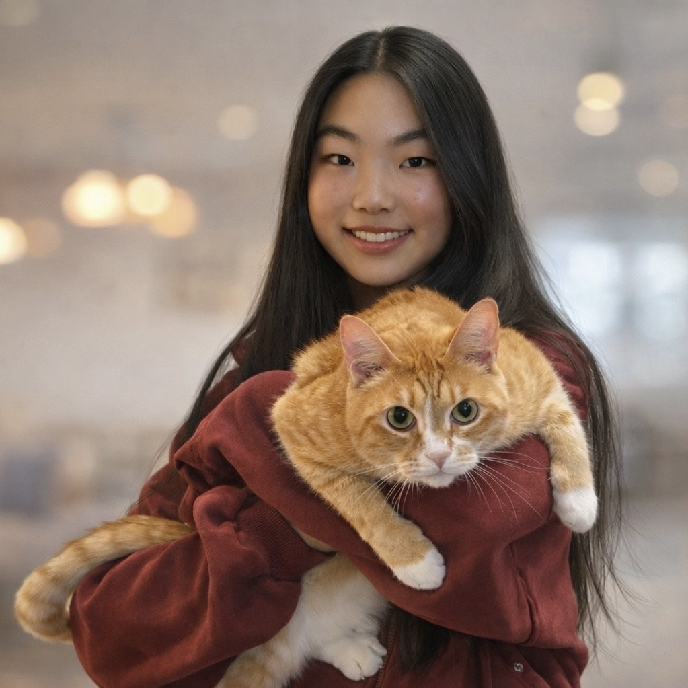

Stitches for Care began as one student’s way to turn crochet into comfort—creating handmade items that bring warmth, dignity, and connection to people facing hardship.

We believe small acts can make a big difference. A blanket, hat, scarf, or plushie—made stitch by stitch— can help someone feel seen and supported during challenging moments. Stitches for Care was created to transform creativity into service. By making and donating handmade comfort items, we aim to spread warmth, kindness, and connection while encouraging students to serve their community through creativity.
Ciara Feng is a student in the STEM program at Mongtgomery Blair High School, who founded Stitches for Care to combine creativity with service. Her crochet work has been recognized at both the Montgomery County Agricultural Fair and the Maryland State Fair, where she received the Bonnie Bay Crochet Design & Youth Award twice, along with multiple Champion and Grand Champion titles and over ten First Place awards.